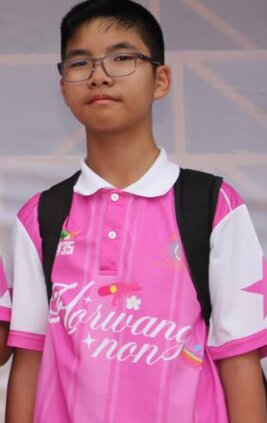

นักเรียนชั้นมัธยมศึกษาปีที่ 2
ยินดีต้อนรับเข้าสู่เว็บไซต์ประวัติส่วนตัวของฉัน
ชื่อ-นามสกุล : ด.ช.รชิษ ทรงเดชคณาวดี
ชื่อเล่น : เตอร์
วันเกิด : 29 กันยายน พ.ศ.2555
อายุ : 14 ปี
เพศ : ชาย
สัญชาติ : ไทย
เชื้อชาติ : ไทย
ศาสนา : พุทธ
กรุ๊ปเลือด : -(ไม่ทราบ)
ที่อยู่ :เขตดอนเมือง กรุงเทพมหานคร ประเทศไทย
คติประจำใจ : คิดก่อนพูด ใช้สติมากกว่าอารมณ์
ระดับอนุบาล
อ.1=โรงเรียนธนินทรวิทยา
อ.2-3=โรงเรียนอนุบาลฤทธิยะวรรณาลัย
ระดับประถม
ป.1-6=โรงเรียนฤทธิยะวรรณาลัย
ระดับมัธยม
ม.1-ปัจจุบัน=โรงเรียนนวมินทราชินูทิศ หอวัง นนทบุรี
สามารถเข้าใจภาษาอังกฤษได้ว่องไว
เล่นเกม อ่านหนังสือ มีความสนใจอยากไปเที่ยวต่างประเทศกับเพื่อน
เป็นจิตแพทย์
Facebook : Saturday Pookjinda
Instagram : saturdaypookjinda
Email : saturday.ter2555@gmail.com
โทรศัพท์ : 096-097-2643